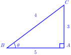

Skip to main content
Contents Dark Mode Prev Up Next \(\newcommand{\N}{\mathbb N} \newcommand{\Z}{\mathbb Z} \newcommand{\Q}{\mathbb Q} \newcommand{\R}{\mathbb R}
\newcommand{\lt}{<}
\newcommand{\gt}{>}
\newcommand{\amp}{&}
\definecolor{fillinmathshade}{gray}{0.9}
\newcommand{\fillinmath}[1]{\mathchoice{\colorbox{fillinmathshade}{$\displaystyle \phantom{\,#1\,}$}}{\colorbox{fillinmathshade}{$\textstyle \phantom{\,#1\,}$}}{\colorbox{fillinmathshade}{$\scriptstyle \phantom{\,#1\,}$}}{\colorbox{fillinmathshade}{$\scriptscriptstyle\phantom{\,#1\,}$}}}
\)
Subsection 2.4.2 Sines and Cosines of Complimentary Angles
Activity 2.4.6 .
\(\textbf{Work in pairs}\)
What you require: A pencil, a ruler, a sciantific calculator (
\(\textbf{for verification}\) ), working material and a printed sine and cosine table.
Read from the tables the values of the following pairs of angles.
\(\displaystyle sin\,40^\circ \quad cos\,50^\circ\)
\(\displaystyle cos\,30^\circ \quad sin\,60^\circ\)
\(\displaystyle sin\,70^\circ \quad cos\,20^\circ\)
\(\displaystyle sin\,80^\circ \quad cos\,90^\circ\)
What do you notice on the results obtained in "1"?
Discuss your work with other learners in your class.
\(\textbf{Complementary angles}\) are two angles whose sum is
\(90^\circ\) (or
\(\frac{\pi}{2}\) radians). The sine and cosine functions of complementary angles have a special relationship:
\begin{align*}
sin(90^\circ-\theta)=\amp cos \, \theta \\
cos(90^\circ-\theta)=\amp sin\, \theta
\end{align*}
For example, if
\(y\) is one angle and
\(x\) is the other angle, then:
\begin{align*}
y+x =\amp 90^\circ
\end{align*}
Generally,For any two complementary angles
\(x \) and
\(y\text{,}\) the following relationships hold:
\(sin\,x=cos\,y\) and
\(cos\,x=sin\,y\text{.}\)
This means that the sine of one angle is equal to the cosine of the other and vice versa.
Example 2.4.20 .
Find acute angles
\(\theta\) and
\(\beta\) if:
\(cos\,45^\circ=sin\,\alpha\text{.}\)
\(cos\,\beta=sin\,5\beta\text{.}\)
\(sin\,2\alpha=cos\,30^\circ\text{.}\)
Solution .
\(cos\,45^\circ=sin\,\alpha\text{.}\)
Implies that,
\begin{align*}
45^\circ+\alpha=\amp 90^\circ \\
=\amp 90^\circ -45^\circ\\
=\amp 45^\circ
\end{align*}
\(cos\,\beta=sin\,5\beta\text{.}\)
Implies that,
\begin{align*}
\beta+5\beta=\amp 90^\circ \\
6\beta=\amp 90^\circ \\
\beta=\amp\frac{90^\circ}{6} \\
= \amp 15^\circ
\end{align*}
\(sin\,2\alpha=cos\,30^\circ\text{.}\)
Implies that,
\begin{align*}
2\alpha+30^\circ=\amp 90^\circ \\
2\alpha=\amp 90^\circ-30^\circ \\
\alpha=\amp \frac{60^\circ}{2} \\
= \amp 30^\circ
\end{align*}
Example 2.4.21 .
\(A\) and
\(B\) are complementary angles.If
\(A=\frac{1}{2}B\text{,}\) find:
Solution .
When we say
\(A \,\text{and} \,B\) are complimentary it implies that,
\(A+B=90^\circ\)
Also we have,
\(A=\frac{1}{2}B\)
First, Write
\(A\) interms of
\(A\) that is,
\begin{align*}
A= \amp \frac{1}{2}B\\
B= \amp 2A
\end{align*}
Since,
\(A+B=90^\circ\text{,}\) subtitute
\(B=2A\)
\begin{align*}
A+2A=\amp 90^\circ\\
3A=\amp 90^\circ\\
A= \amp \frac{90^\circ}{3}\\
=\amp 30^\circ
\end{align*}
\begin{align*}
sin\,A=\amp sin\,30^\circ
\end{align*}
Use tables of sine to find
\(sin\,30^\circ\)
Therefore,
\(sin\,A=0.5000\)
\begin{align*}
cos\,A=\amp cos\,30^\circ
\end{align*}
Use tables of cosine to find
\(cos\,30^\circ\)
\(cos \,30^\circ=0.8660\)
Therefore,
\(cos\,A=0.8660\)
Checkpoint 2.4.22 . Finding Complementary Angles and Trigonometric Ratios.
Load the question by clicking the button below.
Checkpoint 2.4.23 . Finding Sines and Cosines of Complementary Angles.
Load the question by clicking the button below.
Exercises Exercises
1.
If
\(\theta\) is an acute angle such that
\(sin\,(\theta)=\frac{3}{5}\text{,}\) find
\(cos(90^\circ-\theta)\text{.}\)
Answer .
Using the complementary angle identity,
\(cos(90^\circ - \theta) = sin\, \theta\text{.}\) Therefore,
\(cos(90^\circ - \theta) = \frac{3}{5}\text{.}\)
2.
In the right-angled triangle below, find
\(sin\, \theta \) and
\(cos \,\theta\text{,}\) then verify that
\(sin \,\theta= cos\, \theta\text{.}\)

Answer .
In the right-angled triangle,
\(\sin \theta = \frac{\text{opposite}}{\text{hypotenuse}} = \frac{3}{5}\) and
\(\cos \theta = \frac{\text{adjacent}}{\text{hypotenuse}} = \frac{4}{5}\text{.}\) Since
\(\sin \theta = \frac{3}{5}\) and
\(\cos \theta = \frac{4}{5}\text{,}\) we observe that
\(\sin \theta \neq \cos \theta\text{.}\)
3.
Given that
\(cos(32^\circ) = 0.848\text{,}\) find the value of
\(sin(58^\circ)\) without using a calculator.
4.
A ladder leans against a wall, making a
\(65^\circ\) angle with the ground. Find the height at which the ladder touches the wall if the ladder is
\(10\,m\) long.
Answer .
\(\text{Find the height at which the ladder touches the wall}=9.06 \,\text{m}\)